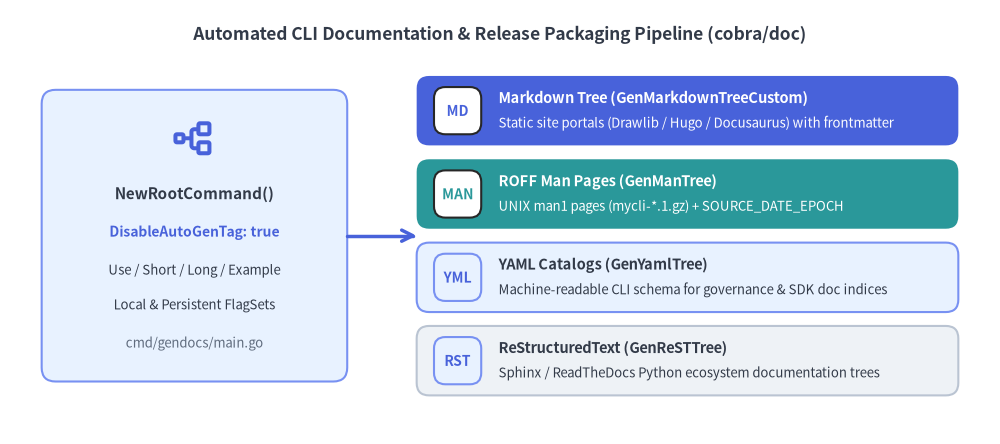
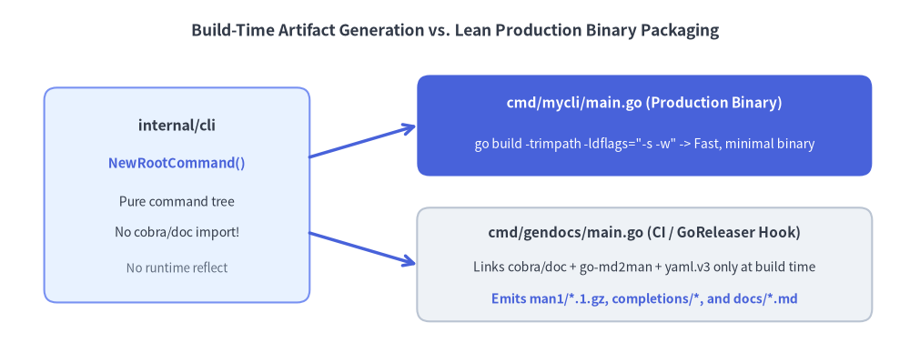

Doc Generation (MD/Man/YAML) & Releases
Because a cobra.Command tree already declares every subcommand path, synopsis, flag type, default value, and usage example in structured Go fields, your code can serve as the Single Source of Truth for both online documentation portals and offline UNIX man pages. The github.com/spf13/cobra/doc subpackage exports your command tree into four standard formats, which can be bundled directly alongside shell completions in CI/GoReleaser pipelines.

Source Code
from drawlib.canvas import save, setup
from drawlib.icons import phosphor
from drawlib.lines import line
from drawlib.shapes import rectangle
from drawlib.smartarts import CardList
from drawlib.styles import Styles
from drawlib.text import text
setup(width=144, height=64)
text(
(72, 59),
"Automated CLI Documentation & Release Packaging Pipeline (cobra/doc)",
style=Styles.DarkBold.patch(text_size=12.5),
)
# Left: Root Command AST Source of Truth
rectangle((28, 30), width=44, height=42, style=Styles.PrimaryNeutral.patch(shape_r=2.0))
phosphor.tree_structure((28, 44), width=6.0, style=Styles.PrimaryBold)
text((28, 36.0), "NewRootCommand()", style=Styles.DarkBold.patch(text_size=11.0))
text((28, 30.5), "DisableAutoGenTag: true", style=Styles.PrimaryBold.patch(text_size=10.0))
text((28, 25.0), "Use / Short / Long / Example", style=Styles.Dark.patch(text_size=9.5))
text((28, 20.0), "Local & Persistent FlagSets", style=Styles.Dark.patch(text_size=9.5))
text((28, 14.5), "cmd/gendocs/main.go", style=Styles.Muted.patch(text_size=9.5))
# Right: 4 Output Formats via CardList
outputs = CardList(
style=Styles.Neutral,
text_style=Styles.DarkBold.patch(text_size=10.5),
description_style=Styles.Dark.patch(text_size=9.5),
badge_shape="rounded_rect",
badge_style=Styles.PrimaryNeutral,
badge_text_style=Styles.PrimaryBold.patch(text_size=10.0),
direction="vertical",
spacing=2.0,
)
outputs.add(
"Markdown Tree (GenMarkdownTreeCustom)",
"Static site portals (Drawlib / Hugo / Docusaurus) with frontmatter",
badge_text="MD",
style=Styles.PrimaryFlat,
text_style=Styles.WhiteBold.patch(text_size=10.5),
description_style=Styles.White.patch(text_size=9.5),
badge_style=Styles.White,
badge_text_style=Styles.PrimaryBold.patch(text_size=10.0),
)
outputs.add(
"ROFF Man Pages (GenManTree)",
"UNIX man1 pages (mycli-*.1.gz) + SOURCE_DATE_EPOCH",
badge_text="MAN",
style=Styles.SecondaryFlat,
text_style=Styles.WhiteBold.patch(text_size=10.5),
description_style=Styles.White.patch(text_size=9.5),
badge_style=Styles.White,
badge_text_style=Styles.SecondaryBold.patch(text_size=10.0),
)
outputs.add(
"YAML Catalogs (GenYamlTree)",
"Machine-readable CLI schema for governance & SDK doc indices",
badge_text="YML",
style=Styles.PrimaryNeutral,
)
outputs.add(
"ReStructuredText (GenReSTTree)",
"Sphinx / ReadTheDocs Python ecosystem documentation trees",
badge_text="RST",
style=Styles.Neutral,
)
outputs.draw(xy=(60, 7), width=78, height=46)
line((50, 30), (60, 30), arrow_head="->", style=Styles.PrimaryBold)
save()
1. The Four cobra/doc Generators
The github.com/spf13/cobra/doc package walks your cobra.Command tree recursively (skipping hidden and deprecated commands) and writes one reference file per command:
| Output Format | Single-Command Writer (io.Writer) |
Full-Tree Directory Generator | Custom Frontmatter / Link Hook |
|---|---|---|---|
Markdown (.md) |
doc.GenMarkdown(cmd, w) |
doc.GenMarkdownTree(cmd, dir) |
doc.GenMarkdownTreeCustom(cmd, dir, prepender, linkHandler) |
Man Pages (.1) |
doc.GenMan(cmd, hdr, w) |
doc.GenManTree(cmd, hdr, dir) |
doc.GenManTreeFromOpts(cmd, GenManTreeOptions{...}) |
YAML (.yaml) |
doc.GenYaml(cmd, w) |
doc.GenYamlTree(cmd, dir) |
doc.GenYamlTreeCustom(cmd, dir, prepender, linkHandler) |
ReST (.rst) |
doc.GenReST(cmd, w) |
doc.GenReSTTree(cmd, dir) |
doc.GenReSTTreeCustom(cmd, dir, prepender, linkHandler) |
Eliminating Git Diff Churn with DisableAutoGenTag: true
By default, every generator appends a date-stamped footer such as:
###### Auto generated by spf13/cobra on 10-Nov-2026
In CI pipelines that verify documentation freshness (git diff --exit-code docs/), this date stamp causes every daily build to fail or pollute Git history even when no flags changed. Always set rootCmd.DisableAutoGenTag = true on your root command:
cobra/docautomatically propagatesDisableAutoGenTag: truefrom parent commands down to all descendants during tree traversal (doc/md_docs.go:91-95).- For
GenManTree,doc/man_docs.go:127also honors the standardSOURCE_DATE_EPOCHenvironment variable for reproducible Debian/RPM/Homebrew builds.
Complete Standalone Generator (cmd/gendocs/main.go)
package main
import (
"fmt"
"log"
"os"
"path/filepath"
"strings"
"time"
"github.com/spf13/cobra/doc"
"example.com/mycli/internal/cli"
)
func main() {
rootCmd := cli.NewRootCommand()
// Suppress volatile timestamps so generated files are 100% deterministic in Git
rootCmd.DisableAutoGenTag = true
// 1. Generate Markdown pages with custom YAML frontmatter
mdDir := "./dist/docs/markdown"
_ = os.MkdirAll(mdDir, 0o755)
filePrepender := func(filename string) string {
name := filepath.Base(filename)
base := strings.TrimSuffix(name, filepath.Ext(name))
title := strings.ReplaceAll(base, "_", " ")
return fmt.Sprintf("---\ntitle: %q\nslug: %q\n---\n\n", title, base)
}
linkHandler := func(name string) string {
return strings.ToLower(name)
}
if err := doc.GenMarkdownTreeCustom(rootCmd, mdDir, filePrepender, linkHandler); err != nil {
log.Fatalf("markdown generation failed: %v", err)
}
// 2. Generate Section 1 UNIX Man Pages
manDir := "./dist/docs/man1"
_ = os.MkdirAll(manDir, 0o755)
fixedDate := time.Date(2026, 1, 1, 0, 0, 0, 0, time.UTC)
header := &doc.GenManHeader{
Title: "MYCLI",
Section: "1",
Date: &fixedDate,
Source: "MyCLI Enterprise",
Manual: "MyCLI User Manuals",
}
if err := doc.GenManTree(rootCmd, header, manDir); err != nil {
log.Fatalf("manpage generation failed: %v", err)
}
// 3. Generate YAML CLI schema catalog
yamlDir := "./dist/docs/yaml"
_ = os.MkdirAll(yamlDir, 0o755)
if err := doc.GenYamlTree(rootCmd, yamlDir); err != nil {
log.Fatalf("yaml generation failed: %v", err)
}
}
2. Go Linker Dead-Code Elimination & Binary Size Hygiene
When shipping a production CLI binary downloaded jutaan times in CI containers, binary size and cold-start latency matter. Understanding how Go's linker (cmd/link) interacts with reflection and cobra/doc helps keep your release binaries lean:

Source Code
from drawlib.canvas import save, setup
from drawlib.lines import line
from drawlib.shapes import rectangle
from drawlib.styles import Styles
from drawlib.text import text
setup(width=144, height=56)
text(
(72, 51),
"Build-Time Artifact Generation vs. Lean Production Binary Packaging",
style=Styles.DarkBold.patch(text_size=12.5),
)
# Shared core package
rectangle((28, 25), width=42, height=34, style=Styles.PrimaryNeutral.patch(shape_r=2.0))
text((28, 36.0), "internal/cli", style=Styles.DarkBold.patch(text_size=11.5))
text((28, 30.0), "NewRootCommand()", style=Styles.PrimaryBold.patch(text_size=10.5))
text((28, 24.0), "Pure command tree", style=Styles.Dark.patch(text_size=10.0))
text((28, 19.0), "No cobra/doc import!", style=Styles.Dark.patch(text_size=10.0))
text((28, 13.5), "No runtime reflect", style=Styles.Muted.patch(text_size=9.5))
# Top Right: Production Binary
rectangle((102, 36), width=72, height=16, style=Styles.PrimaryFlat.patch(shape_r=2.0))
text((102, 39.5), "cmd/mycli/main.go (Production Binary)", style=Styles.WhiteBold.patch(text_size=11.0))
text((102, 33.0), "go build -trimpath -ldflags=\"-s -w\" -> Fast, minimal binary", style=Styles.White.patch(text_size=10.0))
# Bottom Right: Build-Time Generator
rectangle((102, 14), width=72, height=18, style=Styles.Neutral.patch(shape_r=2.0))
text((102, 19.0), "cmd/gendocs/main.go (CI / GoReleaser Hook)", style=Styles.DarkBold.patch(text_size=11.0))
text((102, 13.5), "Links cobra/doc + go-md2man + yaml.v3 only at build time", style=Styles.Dark.patch(text_size=10.0))
text((102, 8.5), "Emits man1/*.1.gz, completions/*, and docs/*.md", style=Styles.PrimaryBold.patch(text_size=10.0))
line((49, 31), (66, 36), arrow_head="->", style=Styles.PrimaryBold)
line((49, 19), (66, 14), arrow_head="->", style=Styles.PrimaryBold)
save()
Three Rules for Minimal CLI Binaries
- Isolate
cobra/docintocmd/gendocs/main.go:github.com/spf13/cobra/docimportsgithub.com/cpuguy83/go-md2man/v2,russross/blackfriday/v2, andgopkg.in/yaml.v3. By callingdoc.GenManTreeanddoc.GenMarkdownTreefrom a separatecmd/gendocs/main.goentry point (rather than linkingcobra/docinto your main binary), your shippedmycliexecutable never links the Markdown-to-ROFF parser or YAML serializer.
- Understand
text/templateandreflect.Value.MethodByName:- Go's linker (
cmd/link) performs aggressive Dead-Code Elimination (DCE), stripping unused functions and struct methods. However, if any reachable code invokesreflect.Value.MethodByNameorreflect.Type.MethodByName(which standardtext/templatedoes to evaluate{{ .Method }}expressions), the linker must conservatively retain exported methods across all reachable types. - Avoid adding extra
text/templateorhtml/templatepipelines in your CLI packages whenfmt.FprintforSetHelpFuncsuffices.
- Go's linker (
- Strip DWARF & Symbol Tables in Release Builds:
- Build release binaries with
CGO_ENABLED=0 go build -trimpath -ldflags="-s -w", which strips the symbol table (-s), DWARF debugging headers (-w), and local filesystem build paths (-trimpath).
- Build release binaries with
3. Packaging Completions & Man Pages in GoReleaser
To give users instant <Tab> completions and man mycli support upon running brew install mycli or apt install mycli, generate both shell completions and compressed man pages during your CI release hook:
// Generate all 4 shell completion scripts programmatically in cmd/gendocs/main.go:
_ = rootCmd.GenBashCompletionV2(bashFile, true)
_ = rootCmd.GenZshCompletion(zshFile)
_ = rootCmd.GenFishCompletion(fishFile, true)
_ = rootCmd.GenPowerShellCompletionWithDesc(pwshFile)
Then reference the generated artifacts in .goreleaser.yaml:
version: 2
before:
hooks:
- go run ./cmd/gendocs
- sh -c "gzip -9 -f ./dist/docs/man1/*.1"
builds:
- id: mycli
main: ./cmd/mycli
env:
- CGO_ENABLED=0
flags:
- -trimpath
ldflags:
- -s -w -X example.com/mycli/internal/cli.version={{.Version}}
archives:
- id: default
files:
- LICENSE*
- README*
- dist/docs/man1/*.1.gz
- dist/completions/*
brews:
- name: mycli
install: |
bin.install "mycli"
man1.install Dir["dist/docs/man1/*.1.gz"]
bash_completion.install "dist/completions/mycli.bash" => "mycli"
zsh_completion.install "dist/completions/mycli.zsh" => "_mycli"
fish_completion.install "dist/completions/mycli.fish"